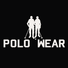
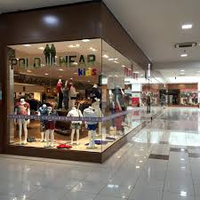

A Polo Wear é a maior empresa de roupas e calçados de luxo do Brasil. Fundada em 2009, . Conhecida por democratizar o acesso ao luxo, ela oferece roupas com estilo clássico e esportivo para toda a família a preços acessíveis, construindo um império de mais de R$ 2 bilhões no varejo nacional.
Nosso centro de distribuição fica em Jacutinga, em Minas Gerais. De lá, saem vários caminhões para distribuir nossos produtos por todo o Brasil. Nossa loja em Lorena:

Compre suas roupas e acessórios na Polo Wear. Acesse nossa loja ou entre em contato se tiver dúvidas. Conheça também nossa história, e nossos diferenciais.
A Polo Wear foi fundada no Brasil com o objetivo de oferecer moda que une o estilo casual e o esportivo, com grande foco nas tendências de moda e alto custo-benefício. A marca faz parte do conglomerado Top Brands Fashion Group, que possui mais de 30 anos de experiência no mercado varejista de vestuário. Rapidamente, a empresa expandiu sua operação por meio de um modelo robusto de lojas próprias e franquias, consolidando-se como referência nacional. Hoje, a Polo Wear é reconhecida pela qualidade e variedade de suas coleções, vestindo toda a família em diversas ocasiões, desde o uso diário até eventos que exigem maior sofisticação